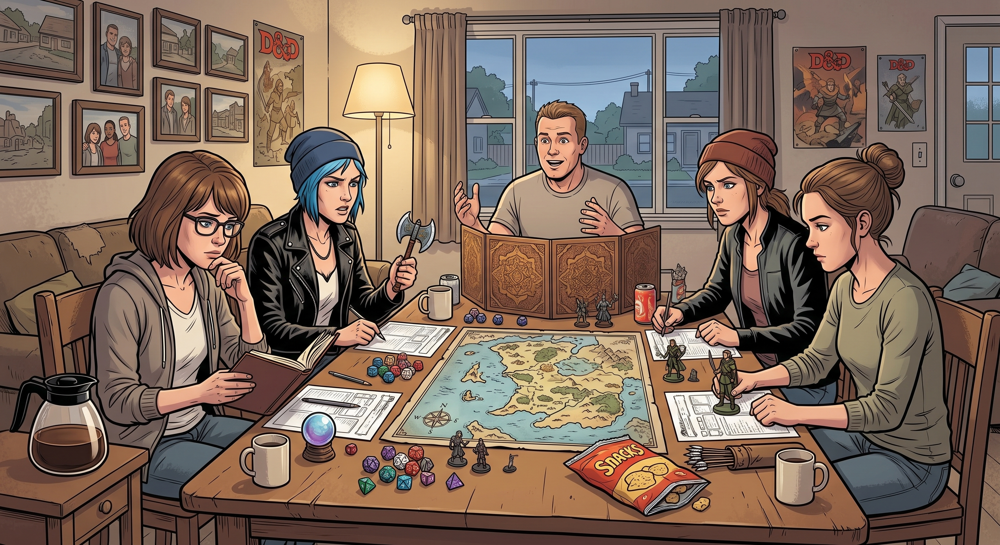

跑團夜

楔子:披薩與白板筆
那是個很普通的週六下午。Warren 家客廳裡,四個人圍著攤開的地圖和一堆骰子——Warren 當 DM,Chloe 玩野蠻人,Max 玩預言法師,Brooke 玩遊俠。
「你們來到一座古老的哥德式地下城門口。」Warren 推推眼鏡,努力維持著劇本裡精心設計的懸疑感,「石門上刻著古精靈語謎題,旁邊有個複雜的拉桿機關——」
「別念了。」Chloe 已經把骰子抓在手裡,「我拔出巨斧,對著石門發動跳斬!」
骰子落地,十八點。
「門碎了!」Chloe 得意地往後靠,「下一個。」
Warren 扶額:「這是需要智力檢定的密碼鎖,強行破壞會觸發——」
「誰在乎,老子皮糙肉厚。」
Max 在旁邊看著自己的角色卡,不動聲色地在筆記本邊緣寫了幾個字——「預兆:今晚存一次給隊友,別讓 Chloe 死得太冤」。
正吵鬧間,門鈴響了。Warren 的媽媽在樓下喊了一聲,說是披薩到了,「還有你們鄰居 David 先生順路過來,說幫忙拿一下。」
David 拎著兩個披薩盒走進客廳,原本只是要把東西放下就走,目光卻不由自主地落在攤開的網格地圖上,腳步一頓。
「你們這小隊陣型簡直是場災難。」他脫口而出,「法師站在沒有掩體的走廊正中央?遊俠沒有交叉火力點?為什麼沒有人在後方佈設陷阱防側翼包抄?」
四個人齊刷刷抬頭看他。
「呃……」Warren 愣了幾秒,反應過來自己面前站著一個活生生的戰術顧問,「David 先生,你要不要——坐下看看?」
David 猶豫了一下,像是在權衡什麼,最後還是把披薩放到桌上,拉了張椅子坐下,拿起白板筆,在地圖角落畫了個箭頭。
「這裡,」他說,「你們應該從這個方向繞。」
那天晚上,原本三個小時的團,多花了四十分鐘聽 David 講解「致命漏斗區」和「交叉掩護撤退點」。Warren 一邊聽一邊瘋狂做筆記,眼神發亮:「這個……這個剛好能破解我設計的第三層亡靈軍團耶。」
散團前,Brooke 鼓起勇氣問了句:「David 先生,你要不要乾脆下次幫我們帶一局?」
David 愣住了,手裡的白板筆停在半空。
他這輩子很少被人用這種眼神看——不是「這個怪叔叔又在管閒事」,而是真心覺得他懂的東西,值得學。有那麼一瞬間,他想起自己在軍隊裡帶新兵的日子,那種被人需要、被人信任的感覺,他以為早就跟著那些勳章一起鎖進箱底了。
「……」他清了清喉嚨,語氣依舊硬邦邦的,「我看看時間表。」
Chloe 在旁邊翻了個白眼,但嘴角忍不住往上翹了一下——她太熟悉這種硬撐的口氣了,那其實就是「好」的意思。
正局:藍色雷霆行動
兩個禮拜後,週六下午兩點。
眾人剛在 Warren 家客廳坐下,期待著又一場精靈與魔法的冒險,結果 David 面無表情地走進來,「啪」地一聲把一本厚厚的美軍步兵作戰手冊、四支戰術手電筒,和一張他自己手繪的等高線軍事地形圖拍在桌上。
沒有人的奇幻地圖。
「今天,」David 說,「我們不玩過家家。」
Warren 倒吸一口氣:「等等,DM,我準備的角色是——」
「駁回。」David 翻開角色卡,眉頭皺得更緊,「《火球術》?魔法在實戰中沒有經過美國陸軍物資認證。你現在是前線戰術通訊與無人機引導員,背負三十磅步話機,每天要做體能檢定。」
Warren 張口結舌:「D&D 什麼時候有體能檢定了……」
「現在有了。」
Brooke 的遊俠被強制轉職成精確射手,拿到一張寫滿彈道公式的表格;Chloe 保住了突擊手的位置,但巨斧被沒收,換成一把短管霰彈槍和破門槌;Max 被指派為戰地醫療兵,面前堆了一疊寫著「TCCC 戰傷救護流程」的講義。
「這局要玩多久?」Chloe 咕噥。
「玩到你們學會怎麼活著走出交火區。」David 頭也不抬地說。
一、切角
「凌晨三點,無月光,能見度十五公尺。」David 的聲音低沉,帶著一種奇異的沉浸感,「你們是『藍色雷霆』小隊。進入地牢第一道門前,所有人裝備清點。」
Chloe 沒理會這套,直接一腳踹向想像中的木門:「我衝進去!」
骰子落下的瞬間,David 面不改色:「判定生效。你踩中門框下方的跳雷,全體投敏捷豁免——Chloe,右腿動脈大出血,倒地倒數三回合。」
「什……」
Warren 試著用比較「正常」的方式補救,提議讓魔寵飛過去探路,結果立刻被 David 打斷。
「愚蠢。」David 敲著地圖上的走廊十字路口,「這是典型的致命漏斗區。你的魔寵剛露頭就被暗處交叉火力撕碎——你沒有切角觀察,直接暴露在敵方射界內。」
「D&D 哪裡來的交叉火網啊?!」Warren 抱頭哀嚎。
Max 悄悄湊過去看 Chloe 的傷勢,發現自己得在時限內完成一次「醫術檢定」才能止血。她翻開講義,一邊讀一邊喃喃背誦步驟,手忙腳亂地投骰——失敗。她面不改色,若無其事地伸手碰了碰桌角,像是不小心碰倒了什麼。
骰子又滾了一次。這回是二十點。
David 抬眼看了她一眼,沒說什麼,只是在筆記本上寫了個「合格」。
二、爆破
小隊終於摸到一道守著重裝步兵的鐵門前。
Chloe 直接無視 David 安排好的「閃光彈+雙人交叉掩護」標準流程,把想像中的滅火器和 C4 用膠帶纏在一起,拉開拉環。
「我全部踢進門縫裡!大家趴下!」
「Chloe!」David 猛地摘下眼鏡,「你在封閉坑道裡引爆超量爆炸物?衝擊波在密閉空間會產生超壓,會震碎全隊內臟!這叫不可接受的附帶損害!」
「反正都要炸,炸大點才痛快!」
Max 沒等他們吵完,已經悄悄把手伸到桌角——這是她們私下的暗號,意味著「我要出手了」。她假裝不小心碰倒了自己的可樂罐,趁著大家手忙腳亂擦桌子的空檔,把 Chloe 骰子上的結果換成了一個勉強能接受的數字,順手往房間裡「扔」了一顆催淚彈的描述。
「爆炸威力降低,全隊倖存,但集體嗆到流淚。」David 嘆了口氣,語氣裡混雜著無奈和一絲不易察覺的鬆了口氣。
Chloe 朝 Max 比了個大拇指。Max 只是笑笑,沒說話。
三、後送
Brooke 中彈倒地休克的橋段,是這局最緊張的一段。
「氣胸發作,」David 面無表情地宣布,「Max,你有六十秒完成緊急胸腔穿刺,失敗即陣亡。」
第一次投骰,手抖失敗。
Max 面不改色地碰倒了桌上的骰子筒,「不小心」讓骰子重投了一次。
第二次,角度不對,又失敗。
她又若無其事地打翻了自己的水杯,趁擦桌子的機會「重新調整」了骰子的位置。
第三次——
「二十點。」Max 輕聲宣布,語氣裡帶著一絲連自己都藏不住的疲憊。
David 盯著她的角色卡看了足足半分鐘,眼神裡是罕見的、毫不掩飾的敬佩。
「完美的野戰救護流程,」他緩緩開口,「你天生是塊當醫官的料。」
Max 擦了擦額角並不存在的冷汗,笑得有點勉強:「謝謝,但我只想當個安靜的攝影師。」
Chloe 在旁邊瞇眼看著她,若有所思——那個「不小心碰倒東西」的小動作,她其實見過太多次了,只是這次沒有拆穿,只是伸手在桌下悄悄碰了碰 Max 的膝蓋,像是在說「我知道,辛苦妳了」。
四、空襲
地下城最深處,邪教大祭司正召喚遠古惡魔。眾人以為要來一場史詩級魔法肉搏,結果 David 指著天花板上的通風井。
「惡魔護甲厚度相當於主戰坦克正面裝甲,常規武器無效。」他看向 Warren,「你的無線電,現在派上用場了——呼叫近距空中支援。」
Brooke 用雷射校準儀鎖定目標,Warren 顫抖著報出九位數座標,Max 「湊巧」按住了桌角讓骰子穩定滾動,Chloe 興奮地按下模擬發射鈕,扯著嗓子大喊:
「『藍色雷霆』呼叫打擊!把這隻大蜥蜴炸回石器時代!」
David 嘴裡發出擬真的爆炸音效,把桌上的惡魔模型一把掃進垃圾桶。
「兩枚五百磅雷射導引航彈直接命中。威脅清除。全員登上黑鷹直升機撤離。任務完成,小隊零陣亡。」
客廳裡爆出一陣歡呼,Warren 幾乎是癱在椅子上,又哭又笑:「這是我玩過最不符合規則書、但也最刺激的一局……」
尾聲:蘇打水與骰子盒
深夜十一點,桌上堆滿密密麻麻的戰術草圖、當彈藥箱用的空可樂罐,和冷掉的披薩。
David 一邊工整地把骰子按面數分類收進防震箱,一邊給四個年輕人各遞了一罐冰鎮蘇打水。
「表現得不錯,菜鳥們。」他難得帶上一絲近乎驕傲的口氣,「戰術素養漏洞百出,但至少……你們今天學會了怎麼活著走出交火區。」
Chloe 接過蘇打水,把玩著那顆二十面骰子,笑得有點張揚,又帶著點少見的真心:
「謝了,老兵。這比上 Jefferson 的藝術史課爽多了。下週我角色要轉職成工兵爆破手,那本地雷部署手冊借我翻翻?」
David 看了她一眼,難得沒反駁,只是點點頭:「明天車庫找我拿。」
Max 靠在沙發邊,看著這一幕,忽然想起自己那些「不小心碰倒東西」的小動作——David 大概什麼都沒發現,又或者,他其實什麼都看在眼裡,只是選擇和她一樣,不說破。
她舉起拍立得,對準此刻的客廳:滿桌狼藉,Warren 癱在椅子上傻笑,Brooke 舉著相機拍空汽水罐,Chloe 翹著腳把玩骰子,David 一絲不苟地收拾裝備。
快門按下的瞬間,把這場沒有巨龍與精靈、卻意外溫暖的「家庭戰役」,定格成了阿卡迪亞灣最不正經、也最真實的一張全家福。